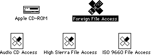

|
|
This Technical Note discusses issues concerning the use of the AppleCD SC
drive, the Apple CD-ROM device driver, and the Foreign File Access software extension.
Updated: [Feb 01 1991]
|
Multiple CD-ROM Drives
Your application can get access to the driver by calling the Device Manager
routine _OpenDriver:
osErr = OpenDriver("\p.AppleCD", &ioRefNum);
|
_OpenDriver returns the driver reference number for the AppleCD SC drive
with the lowest SCSI bus number, and this is okay if you are going to control
only one AppleCD SC drive. If you want to control or access more than one
drive, you must compute the driver reference number yourself. You can use the
following formula to compute SCSI driver reference numbers:
The following code demonstrates how to open any AppleCD SC drive connected to a
Macintosh. OpenCD takes a logical CD drive number, not a SCSI ID, as
the input parameter CDDrive. A logical CD drive number of one refers
to the AppleCD SC drive with the lowest SCSI ID connected to the Macintosh.
typedef struct WhoIsThereRec {
ParamBlockHeader
short ioRefNum;
short csCode;
struct {
Byte fill;
Byte SCSIMask;
} csParam;
} WhoIsThereRec;
OSErr OpenCD(Byte CDDrive, short *ioRefNum) {
auto OSErr osErr;
auto short ioRefNumTemp;
auto short CDDriveCount;
auto short SCSIID;
auto WhoIsThereRec *pb;
pb = (WhoIsThereRec *) NewPtrClear(sizeof (*pb));
osErr = MemError();
if (0 != pb && noErr == osErr) {
osErr = OpenDriver("\p.AppleCD", &ioRefNumTemp);
if (noErr == osErr) {
(*pb).ioRefNum = ioRefNumTemp;
(*pb).csCode = csWhoIsThere;
osErr = PBStatus((ParmBlkPtr)pb, false);
if (noErr == osErr) {
CDDriveCount = 0;
for (SCSIID = 0; SCSIID < 7; ++SCSIID) {
if (BitTst(&(*pb).csParam.SCSIMask, 7-SCSIID)) {
++CDDriveCount;
if (CDDrive == CDDriveCount) {
*ioRefNum = -(32 + SCSIID) - 1;
DisposPtr((Ptr) pb);
return noErr;
}
}
}
osErr = paramErr;
}
}
DisposPtr((Ptr) pb);
}
return osErr;
}
|
Back to top
Device Manager Routines and Parameter Blocks
The Apple CD-ROM driver does not conform to the design criteria of the Device
Manager, so do not use high-level Device Manager calls, because they do not
work. Mistakenly, status calls are used to change control settings of the
device, and control calls are used to get status information of the drive. The
high-level Control and Status calls do not anticipate this
implementation and simply do not work; instead, use the low-level _PBControl
and _PBStatus calls for all access to the drive.
Zero parameter blocks before using them. The unused bytes of the parameter
blocks must be set to zero before you can use the parameter block in
_PBControl or _PBStatus calls to the driver. Failure to zero
the blocks results in the Device Manager calls returning an unexpected
ioResult of paramErr (-50).
Back to top
Binary Coded Decimal
The AppleCD SC driver communicates track numbers and
absolute-minutes-seconds-frame addresses in what is known as Binary Coded
Decimal (BCD) format. In BCD, every four bits are used to represent one
decimal digit. When working with the AppleCD SC, the BCD values are only up to
two digits in length, "99" tops. Table 1 illustrates some possible values and
their representation in 2's complement and Binary Coded Decimal form.
BCD Value 2's Complement
Hex Binary Hex Binary
0x01 00000001 1 0x01 00000001
0x09 00001001 9 0x09 00001001
0x10 00010000 10 0x0A 00001010
0x80 10000000 80 0x50 01010000
0x99 10011001 99 0x63 01100011
Table 1-BCD and 2' Complement Value Comparison
To convert from a 2's Complement number to a BCD number, take the value of the
digit in the ten's place, store it in the leftmost four bits of a byte, then
add to it the value of the digit in the one's place.
Byte Decimal2BCD(Byte n) {
return ((n / 10) << 4) + (n % 10);
}
|
Converting from BCD to decimal requires multiplying the value in the leftmost
four bits by 10 and adding the value of rightmost four bits to the result.
Byte BCD2Decimal(Byte n) {
return ((n >> 4) * 10) + (n & 0x0f);
}
|
Back to top
Block Addresses
Physical blocks on a Compact Disc are defined as being 2K bytes in size. Since
the Macintosh operating system likes to work in 512-byte blocks, it sets the
logical block size to 512 bytes. If you assume 2K blocks when using block
addresses, you get into trouble. If you are going to access the drive using
logical block addressing, either change the block size back to 2K or be sure
the formula you use in conversion from an absolute-minutes-seconds-frames
address to a logical-block address takes this difference into account.
Back to top
Foreign File Access And The 'sysz' Resource
Large capacity ISO and High Sierra format discs can overload the default memory
limits of Apple's current external file system software, Foreign File Access.
(This is not a problem for HFS-formatted CD-ROM discs, since the File Manager
deals directly with native volumes, bypassing the Foreign File Access
software.)
Since unused memory reserved by Foreign File Access at INIT time cannot be
reclaimed, Apple limited the amount of memory that is available to Foreign File
Access. The Foreign File Access file contains a 'sysz' resource that
reserves 71, 680 bytes in the system heap. If the 'sysz' is too small
discs do not mount, but if it is too big it wastes precious memory. Using the
default 'sysz' value, Foreign File Access cannot handle a CD-ROM with
an extremely large number of files and directories. In addition, with multiple
AppleCD SC drives connected, Foreign File Access may run out of memory if
multiple ISO or High Sierra CD-ROM discs are mounted.

Figure 1 - Apple CD-ROM Driver and Foreign File Access Software
Using ResEdit, you can experiment by changing the 'sysz' resource to
find the optimal value for your disc's requirements. To avoid wasting valuable
space in the System heap, increase this value incrementally until your disc
mounts (after you reboot, of course). Asking your users to understand ResEdit
or perform this operation is asking a bit much, so following is code upon which
you could base a simple application to change the 'sysz' value
automatically for them. Remember that this application would need to be
shipped separately (i.e., it is not accessible from the CD-ROM if the CD-ROM
cannot be mounted).
This code assumes the creator and file type of the Foreign File Access file to
be ufox and INIT respectively. It prompts the user to locate
Foreign File Access using the Standard File Package routine
_SFGetFile. This example does not allow the 'sysz' value to
be made smaller than Apple's default setting.
|
Note:
You should not assume that Foreign File Access can be found in the
System Folder; the Foreign File Access software resides in the Extensions
folder when running System Software 7.0. Give the user the opportunity to find
the file using a standard file dialog box.
|
char *prompt = "Find 'Foreign File Access'";
pascal Boolean FilterProc(HParmBlkPtr paramBlk) {
return 'ufox' == (*paramBlk).fileParam.ioFlFndrInfo.fdCreator ? false : true;
}
OSErr Modify_sysz(long size) {
auto OSErr osErr;
auto SFReply reply;
auto Point where;
auto OSType type;
auto short resRefNum;
auto long **sysz;
osErr = noErr;
SetPt(&where, 100, 100);
type = 'INIT';
SFGetFile(where, prompt, FilterProc, 1, &type, nil, &reply);
if (reply.good) {
resRefNum = OpenRFPerm(reply.fName, reply.vRefNum, fsRdWrPerm);
osErr = ResError();
if (-1 != resRefNum) {
sysz = (long **) Get1Resource('sysz', 0);
osErr = ResError();
if (nil != sysz) {
if (0x00011800 < size) {
**sysz = size;
ChangedResource((Handle) sysz);
osErr = ResError();
}
}
CloseResFile(resRefNum);
}
}
return osErr;
}
|
Back to top
Mixing Data and Audio
Any time the System, Finder, an application, or another code resource (e.g.,
XCMDs) accesses a disc, any sound being played from the disc is interrupted.
Back to top
References
AppleCD SC Developers Guide, Revised Edition
Back to top
Downloadables
|

|
Acrobat version of this Note (48K)
|
Download
|
Back to top
|